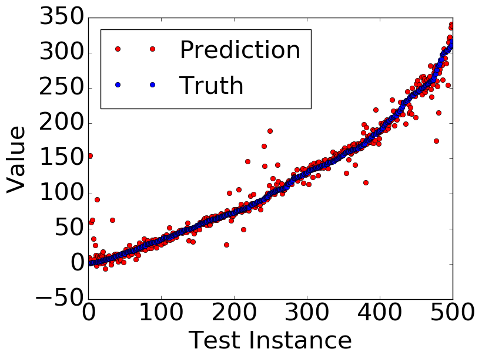
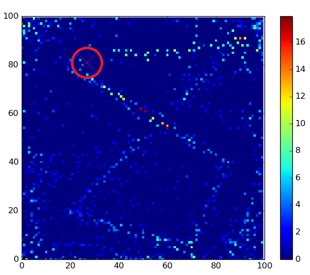

Incorporating Side-Channel Information into Convolutional Neural Networks for Robotic Tasks (Accepted: ICRA 2017)
Yilun Zhou and Kris Hauser [Paper PDF]
This page provides a comprehensive summary of all experimental results, supplementing our ICRA 2017 Paper which only highlights representative results due to page limit. Links to data generation script and learning script are also provided.
Running Data Generation and Learning Script
Each problem has two scripts. The data generation scripts generates training and testing data into folder "data". For problems whose data generation script is a single Python file, the user need to create the "data" folder. For problems whose data generation script is a zipped folder, the appropriate folder structure has been set up and running "python generate_data_(problem).py" will start data generation. For all problems, the learning script is a zipped folder with correct folder structure. However, the data folder inside is empty, and the user needs to copy generated data into the data folder.
All codes are written in Python 2. Both data generation script and learning script depend on NumPy. The data generation for Simultion problem also depends on PyBox2D and Shapely. The learning script depends on Theano. It is recommended to train CNN on a GPU as it can be considerably faster than a CPU. For any questions, please email yilun@cs.duke.edu
Jump to:
Architecture Summary (Click to Enlarge) [Back to Top]
| Activation Map | Mix-In |
| Stacking | Input-Modulated Kernel |
Test Problems Summary [Back to Top]
| Problem | Main-Channel Dim | Side-Channel Dim | Type |
|---|---|---|---|
| 2D Block | 20×20 | 4 | Classification |
| 2D Independent | 20×20 | 4 | Classification |
| 3D Block | 20×20×20 | 6 | Classification |
| Simulation | 100×100 | 4 | Classification |
| Col 2D Fixed | 100×100 | 2 | Regression |
| Col 2D Variable | 100×100 | 4 | Regression |
| Col Arm | 52×52×34 | 1 | Regression |
Test Error Summary [Back to Top]
| Activation Map | Mix-In | Stacking | Input-Modulated Kernel | Baseline | Output Range | |
|---|---|---|---|---|---|---|
| 2D Block | 1.7% | 5.8% | 3.8% | 4.6% | 27.2% | [0, 100%] |
| 2D Independent | 6.8% | 22.6% | 18.3% | T! | 33.8% | [0, 100%] |
| 3D Block | 4.4% | 5.4% | 4.7% | T! | 25.2% | [0, 100%] |
| Simulation | 23.9% | 26.8% | 35.0% | T! | 47.0% | [0, 100%] |
| Col 2D Fixed | 16.8 | 14.8 | 19.5 | T! | 72.2 | [0, 331] |
| Col 2D Variable | 2.20 | 2.82 | 2.25 | T! | 5.72 | [0, 100] |
| Col Arm | 84 | 139 | 280 | T! | 104 | [0, 4725] |
2D Block [Back to Top]
Data generation script: generate_data_2d_block.pyLearning script: 2d_block_indep.zip
Test Error vs. Iteration
Visualization of Activation Map with 10 Hidden Neurons per Layer
Visualization of Activation Map with 1000 Hidden Neurons per Layer
t-SNE Visualization of Mix-In Effect, red paths are colliding and green paths are free (Click to Enlarge)
| With Mix-In | Without Mix-In |
2D Independent [Back to Top]
Data generation script: generate_data_2d_indep.pyLearning script: 2d_block_indep.zip
Test Error vs. Iteration
The kernel architecture is trained as long as others while achieving much fewer iterations.
Visualization of Activation Map with 10 Hidden Neurons per Layer
Visualization of Activation Map with 1000 Hidden Neurons per Layer
Visualization of Activation Map with 2000 Hidden Neurons per Layer
t-SNE Visualization of Mix-In Effect, red paths are colliding and green paths are free (Click to Enlarge)
| With Mix-In | Without Mix-In |
3D Block [Back to Top]
Data generation script: generate_data_3d_block.pyLearning script: 3d_block.zip
Test Error vs. Iteration
Visualization of Activation Map (left: full; right: 500 highest values)
Start and goal are marked with red spheres.
Simulation [Back to Top]
Data generation script: generate_data_simulation.zipLearning script: simulation.zip
Test Error vs. Iteration
2D Collision Fixed Path [Back to Top]
Data generation script: generate_data_col_2d_f.zipLearning script: col_2d_f.zip
Test Error vs. Iteration

Result Visualization for Best Performing (Mix-In) Architecture
|  | |
| Ground Truth vs. Prediction | Cumulative Distribution Function of Error |
Visualization of Activation Map (current position circled)

2D Collision Variable Path [Back to Top]
Data generation script: generate_data_col_2d_v.zipLearning script: col_2d_v.zip
Test Error vs. Iteration
Visualization of Activation Map
Current position is arrow tail and velocity direction and magnitude are reflected by arrow vector.
Arm Collision [Back to Top]
Data generation script: generate_data_col_arm.zipLearning script: col_arm.zip
Test Error vs. Iteration


{kind=link}
{kind=link}
{kind=link}
{kind=link}
{kind=link}
{kind=link}
{kind=link}
{kind=link}
- Duke Robotics
- Pratt School of Engineering
- Duke University
- WISeNet IGERT training program
- Duke Robotics Club
- Duke Makers Club